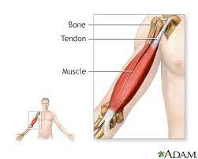

What is Seizures?
- Seizures, also known as convulsions or fits, are sudden, uncontrolled electrical disturbances in the brain that can cause changes in behavior, movements, sensations, or consciousness.
- They are a symptom of an underlying neurological disorder and can vary widely in severity, duration, and presentation.
Causes
some common causes of seizures:
- Epilepsy: Epilepsy is a neurological disorder characterized by recurrent seizures. It can be caused by genetic factors, brain injury, brain malformations, or unknown factors.
- Brain Injury: Traumatic brain injury resulting from accidents, falls, or head trauma can increase the risk of seizures, especially if there is damage to the brain's structure or function.
- Brain Tumors: Benign or malignant tumors in the brain can cause seizures by disrupting normal brain activity or pressing on surrounding brain tissue.
- Stroke: A stroke occurs when there is a disruption of blood flow to the brain, leading to brain damage. Seizures can occur during or after a stroke due to the sudden changes in brain function.
- Infections: Infections of the brain or surrounding structures, such as meningitis, encephalitis, or brain abscesses, can trigger seizures by causing inflammation or damage to brain tissue.
- Genetic Factors: Certain genetic conditions or mutations may predispose individuals to develop epilepsy or other seizure disorders.
Common Symptoms
The symptoms of a seizure can vary depending on the type and severity but may include:
- Uncontrollable muscle jerking or convulsions.
- Loss of consciousness or awareness.
- Staring spells or absent-mindedness.
- Strange sensations
- Involuntary movements, such as lip-smacking or repetitive hand movements
- Loss of bladder or bowel control

First aid tips of Seizures
Providing first aid during a seizure is crucial for ensuring the safety of the person experiencing the seizure and minimizing the risk of injury.
Few first aid tips:
- Stay Calm.
- Ensure Safety.
- Do Not Put Anything in the Mouth
- Time the Seizure
- Monitor Breathing
Remember, most seizures are self-limiting and do not require medical intervention beyond ensuring safety and comfort. However, if the person has prolonged or recurrent seizures, experiences difficulty breathing, or sustains injuries during the seizure, seek emergency medical assistance promptly.